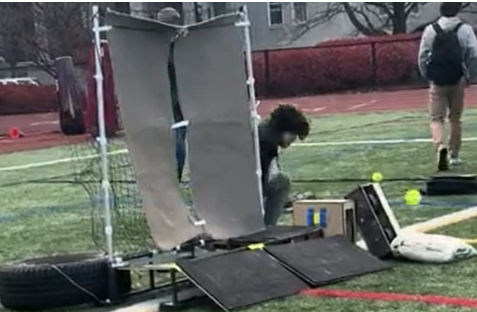

Capstone · Feeding & electronics lead
Robo-Catcher: a softball machine that catches and throws back
Pitching machines exist; none catch and return the ball. Our 12-person capstone team built one for under $700. I owned the rotating dual-chamber feeder and every line of electronics: MATLAB-sized stepper drive, ESP32 firmware, wireless controls, and the safety cut-offs.
100% indexing success · <$700 build · 55 lb, fits in a car trunk Read the case study →